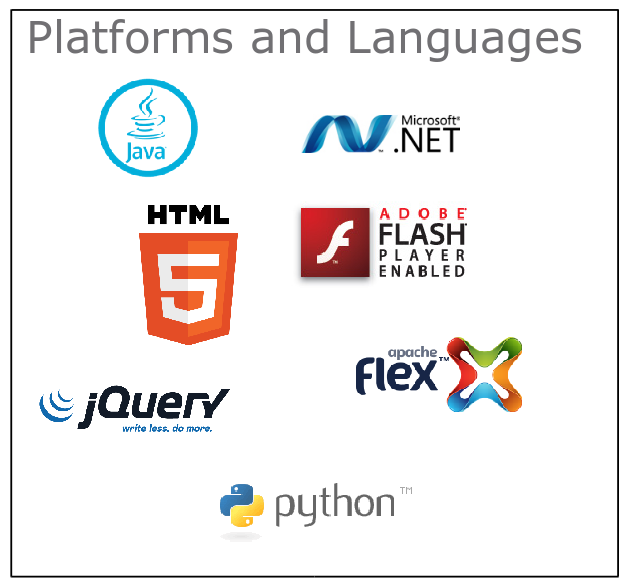

Traditional APIs are too complicated
⇨ RESTful Web APIs
Deployment is too complicated
⇨ Cloud
GUI Programming is too complicated
⇨ HTML5 + JavaScript
HTML5 + JavaScript is too complicated
⇨ AngularJS + Bootstrap
|  |
|
|
|
Request
GET /dctm-rest/cabinets HTTP/1.1
Host: documentum.example.com
Accept: application/vnd.emc.documentum+jsonResponse
HTTP/1.1 200 OK
Date: Friday, 03 April 2015 12:42:38 GMT
Server: Apache/2.4.2
Content-Type: application/vnd.emc.documentum+json
{
"id": "http://localhost:8080/dctm-rest/repositories/REPO/cabinets",
"title": "Cabinets",
"author": [
{
"name": "EMC Documentum"
}
],
"updated": "2015-02-11T08:02:46.060+00:00",
"page": 1,
"items-per-page": 100,
"links": [
{
"rel": "self",
"href": "http://localhost:8080/dctm-rest/repositories/REPO/cabinets"
},
{
"rel": "next",
"href": "http://localhost:8080/dctm-rest/repositories/REPO/cabinets?items-per-page=100&page=2"
},
{
"rel": "first",
"href": "http://localhost:8080/dctm-rest/repositories/REPO/cabinets?items-per-page=100&page=1"
}
]
A message is self-descriptive.
... it contains everything you need to interpret it.
Interaction is stateless between requests.
No persistent connection.
Client can send tokens or cookies to indicate client state.
Standard methods and media types are used to indicate semantics and exchange information.
Responses state whether they can be cached.
Representations are JSON, HTML, or XML documents that indicate client state using links.
Servers provide choices to clients using links in responses.
REST = REpresentational State Transfer
Servers
The Web page analogy: REST for humans
|
HTTP/1.1 200 OK
Date: Friday, 03 April 2015 12:42:38 GMT
Server: Apache/2.4.2
Content-Type: application/vnd.emc.documentum+json
{
"id": "http://localhost:8080/dctm-rest/repositories/REPO/cabinets",
"title": "Cabinets",
"author": [
{
"name": "EMC Documentum"
}
],
"updated": "2015-02-11T08:02:46.060+00:00",
"page": 1,
"items-per-page": 100,
"links": [
{
"rel": "self",
"href": "http://localhost:8080/dctm-rest/repositories/REPO/cabinets"
},
{
"rel": "next",
"href": "http://localhost:8080/dctm-rest/repositories/REPO/cabinets?items-per-page=100&page=2"
},
{
"rel": "first",
"href": "http://localhost:8080/dctm-rest/repositories/REPO/cabinets?items-per-page=100&page=1"
}
]
I am getting frustrated by the number of people calling any HTTP-based interface a REST API.
... if the engine of application state (and hence the API) is not being driven by hypertext, then it cannot be RESTful and cannot be a REST API. Period.
(Roy Fielding)
... today if you see an API that claims to be RESTful, it’s basically saying
“To work with our data, send the proper HTTP verb to the URIs in our online docs and specify whether ya want JSON or XML”.
Servers provide choices via links in hypertext documents.
Clients need to know how to find and use links for each media type.
That's what a REST API description language should focus on. Most focus on other things instead.
To prevent tight coupling between the client and the service, truly RESTful APIs provide a discovery based API. Each call provides a reference to related calls.
This allows the API to be highly evolvable because it avoids creating a coupling between the client and the server.
Servers and clients can evolve independently.
URI formats and the services offered can change without breaking clients.
Servers can redirect clients to other servers.
Servers can add metadata to client links.
Referring website
Tracking information
Metadata used for optimization
The Server's view is the Resource Model
The Client view is HTTP + Hypermedia